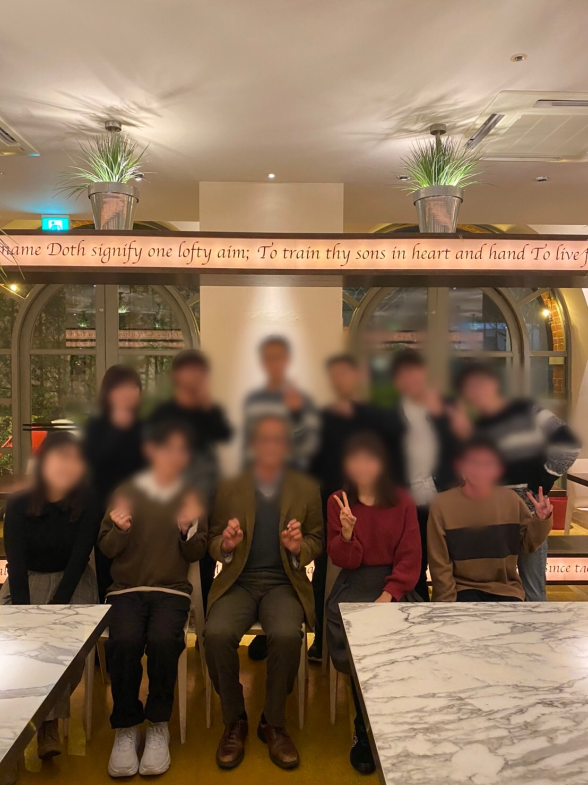

2020年1月14日に田村顧問と食事会を行いました。年に数回の顧問との食事会でした。同志社やコール・フリューゲルの歴史や様々なことをお話ししました。顧問はとても気さくな方で、初対面のメンバーも多くいましたが、和やかな雰囲気で会話も弾みました。
1年間よろしくお願いします。
(寒梅館アマークにて。田村顧問、幹部、全パートリーダー、会計、3回生内政)
2019年12月8日に寒梅館ハーディーホールにて第53回定期演奏会を行いました。本演奏会では、作曲家の石若雅弥先生が編曲なさったディズニー"Under the sea"を初演しました。
これをもちまして今年度の活動を終了します。ご声援ありがとうございました。次年度のコール・フリューゲルもどうぞよろしくお願いします
7月7日の前期総会をもって、2019年度の前期活動を全て終了致しました。新入生も迎え、1回生初舞台である京都合唱祭や前期の締めくくりである3団ジョイントコンサートと駆け抜けて参りました。後期ではサブパートリーダーらによるステージや更に磨きをかけた通年曲ステージと盛りだくさんの数ヶ月となります。これからもご声援のほどよろしくお願い致します。
2019年6月30日に寒梅館ハーディーホールにて、3団ジョイントコンサートを無事終了する事が出来ました。
今年度は京都府立大学合唱団、大谷大学混声合唱団との3団ジョイントコンサートという形となりました。
5月25日、26日はロームシアターにて、京都合唱祭が行われました。今年は木下牧子先生作曲「そのひとがうたうとき」を演奏いたしました。初のサブパートリーダーによるステージということで期待と不安で半々でしたが、無事4分間を歌いきることが出来ました。次のサブのステージは定期演奏会第1ステージです。是非ハーディーホールまで足をお運びくださいませ。
4月27日、同志社礼拝堂にて、2019年度の新入生を無事迎えることが出来ました。本年度も、23名の新入生に恵まれ、幸先の良いスタートを切ることが出来ました。総勢70人以上のメンバーでこれから1年間活動してまいります。どうぞよろしくお願いします。